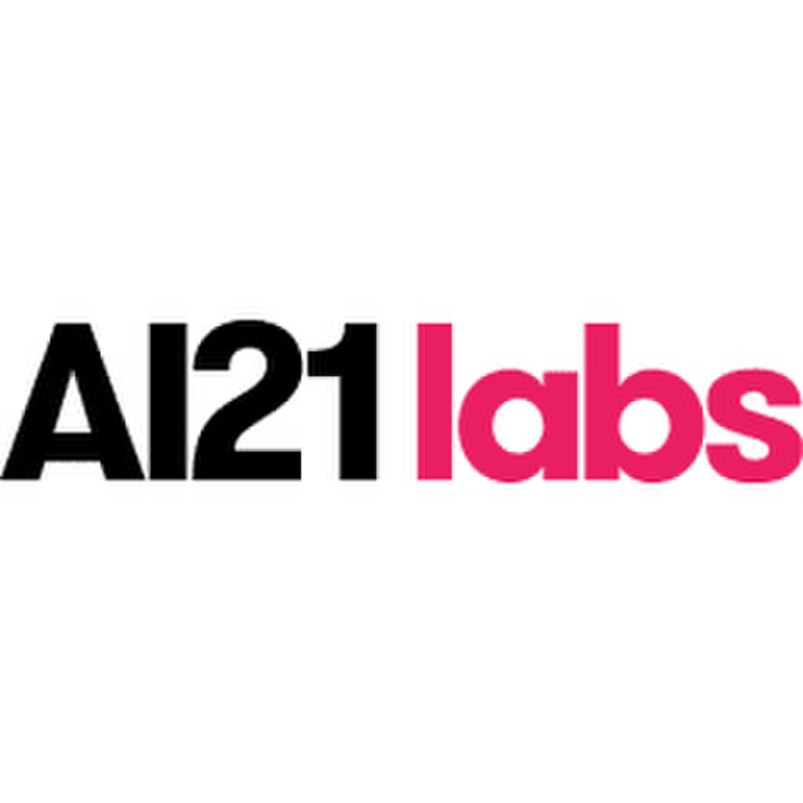

מידע מרכזי
שנת הקמה: 2017
מדינה: ישראל
מייסדים: יואב שוהם, אורי גושן, אמנון שעשוע
פריצת דרך: פיתוח Wordtune ומשפחת מודלי Jurassic.
מוצרים / מודלים: Wordtune, Jurassic, AI21 Studio
כיווני הרחבה עתידיים
בהמשך יתווספו ציר זמן, הרחבה על המייסדים, מודלי Jurassic והשפעת החברה על תחום השפה.